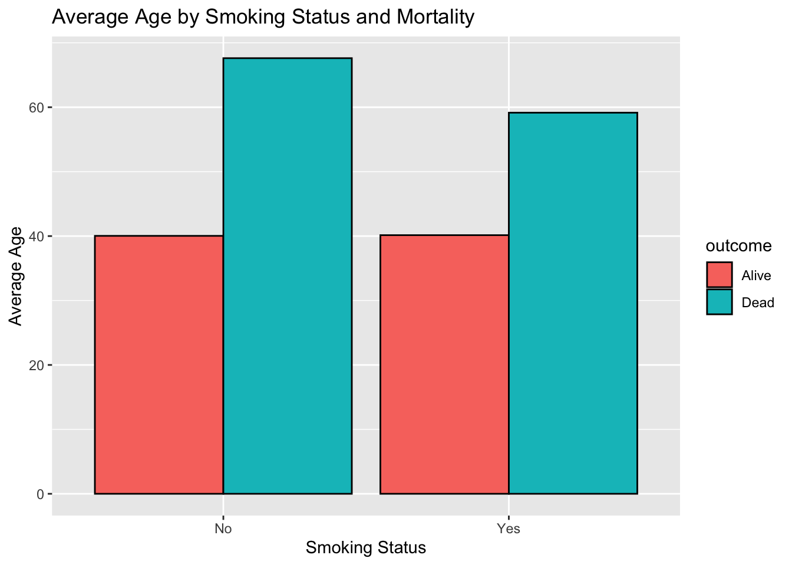
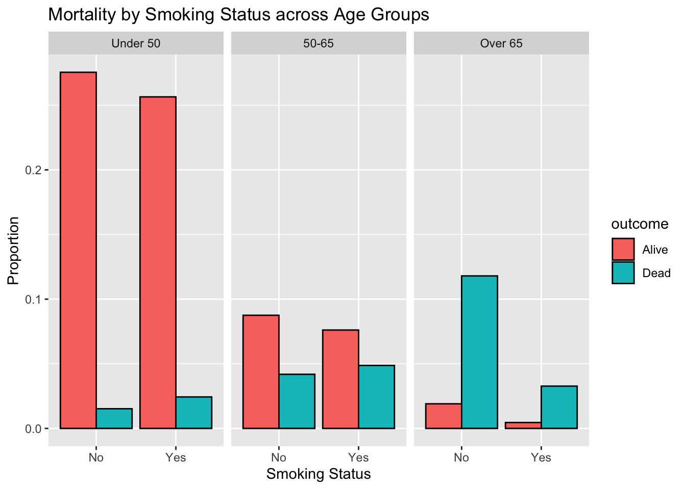
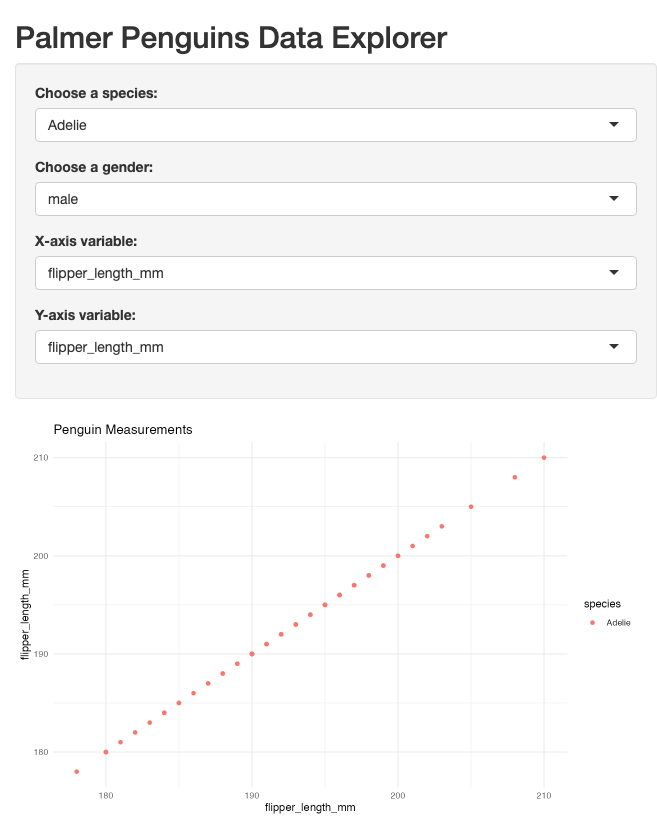

Lab 8
Due: Friday, April 12th at 8:30am
Goals of this lab
- In this lab, you will work with observational data to assess the relationship between an exposure and the incidence of a disease.
- You will practice bootstrap to calculate a 95%CI.
- You will create an interactive web application with
shiny.
Exercise 1:
The Whickham data set in the mosaicData package includes data on age, smoking, and mortality from a one-in-six survey of the electoral roll in Whickham, a mixed urban and rural district near Newcastle upon Tyne, in the United Kingdom. The survey was conducted in 1972–1974 to study heart disease and thyroid disease. A follow-up on those in the survey was conducted 20 years later. Describe the association between smoking status and mortality in this study. Be sure to consider the role of age as a possible confounding factor.
data("Whickham")table_smoking_mortality <- table(Whickham$smoker, Whickham$outcome)
prop.table(table_smoking_mortality, margin = 1) # prop by smoking status
Alive Dead
No 0.6857923 0.3142077
Yes 0.7611684 0.2388316Whickham %>%
group_by(smoker, outcome) %>%
summarise(mean_age = mean(age), .groups = 'drop') %>%
ggplot(aes(x = smoker, y = mean_age, fill = outcome)) +
geom_bar(stat = "identity", position = position_dodge(), color = "black") +
labs(title = "Average Age by Smoking Status and Mortality", x = "Smoking Status", y = "Average Age")
Whickham %>%
mutate(age_group = cut(age, breaks = c(0, 50, 65, 100), labels = c("Under 50", "50-65", "Over 65"))) %>%
group_by(age_group, smoker, outcome) %>%
summarise(count = n(), .groups = 'drop') %>%
mutate(proportion = count / sum(count)) %>%
ggplot(aes(x = smoker, y = proportion, fill = outcome)) +
facet_wrap(~age_group) +
geom_bar(stat = "identity", position = position_dodge(), color = "black") +
labs(title = "Mortality by Smoking Status across Age Groups", x = "Smoking Status", y = "Proportion")
There seems to be a pretty complex relationship between smoking status and mortality that is confounded by age. Although initially it appears that a lower proportion of smokers died compared to non-smokers, further examination shows that this is misleading. Age stratification indicates that smokers tend to die at younger ages, thus fewer survive into older age groups. Consequently, the older age group contains a higher proportion of non-smokers who have lived longer, not because they are healthier but potentially because smokers may not have survived to be part of that group. This reflects survivorship bias and shows how smoking is indeed associated with increased mortality when properly accounting for age as a confounding factor.
Exercise 2:
- Calculate the mean age of birthing people from the
Gestationdata set from themosaicDatapackage.
data("Gestation")
mean_age <- Gestation %>%
summarize(mean_age = mean(age, na.rm = TRUE))
mean_age# A tibble: 1 × 1
mean_age
<dbl>
1 27.3- Use the bootstrap to generate and interpret a 95% confidence interval for the mean age of birthing people.
boot_mean <- function(data, indices) {
d <- data[indices] # samples with replacement
mean(d, na.rm = TRUE)
}
set.seed(123)
# bootstrap
bootstrap_results <- boot(data = Gestation$age, statistic = boot_mean, R = 1000)
# 95% confidence interval
conf_interval <- boot.ci(bootstrap_results, type = "perc")
conf_intervalBOOTSTRAP CONFIDENCE INTERVAL CALCULATIONS
Based on 1000 bootstrap replicates
CALL :
boot.ci(boot.out = bootstrap_results, type = "perc")
Intervals :
Level Percentile
95% (26.94, 27.60 )
Calculations and Intervals on Original ScaleExercise 3:
Using data from the palmerpenguins package, create a Shiny app that displays measurements from the penguins dataframe. Allow the user to select a species or a gender, and to choose between various attributes on a scatterplot. (Hint: examples of similar apps can be found at the Shiny gallery).
data("penguins")
# UI
ui <- fluidPage(
titlePanel("Palmer Penguins Data Explorer"),
sidebarLayout(
sidebarPanel(
selectInput("species", "Choose a species:",
choices = unique(penguins$species)),
selectInput("gender", "Choose a gender:",
choices = unique(penguins$sex)),
selectInput("xvar", "X-axis variable:",
choices = c("flipper_length_mm", "bill_length_mm", "bill_depth_mm", "body_mass_g")),
selectInput("yvar", "Y-axis variable:",
choices = c("flipper_length_mm", "bill_length_mm", "bill_depth_mm", "body_mass_g"))
),
mainPanel(
plotOutput("scatterPlot")
)
)
)
server <- function(input, output) {
output$scatterPlot <- renderPlot({
# filter data based on user selections
filtered_data <- penguins %>%
filter(species == input$species, sex == input$gender)
# scatterplot
ggplot(filtered_data, aes_string(x = input$xvar, y = input$yvar)) +
geom_point(aes(color = species)) +
labs(title = "Penguin Measurements", x = input$xvar, y = input$yvar) +
theme_minimal()
})
}
shinyApp(ui = ui, server = server)